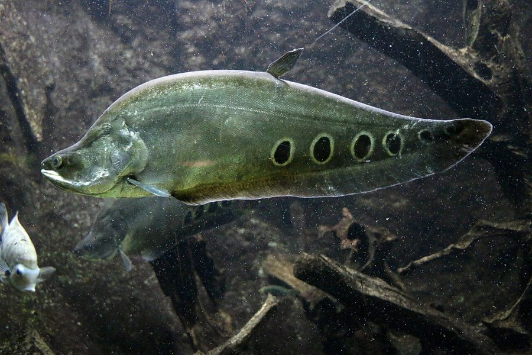

चीतलClown Knifefish
Chitala chitala · Notopteridae · FSH-0032

- Scientific name वैज्ञानिक नाम
- Chitala chitala (Hamilton, 1822)
- Family कुल
- Notopteridae
- Hindi हिंदी
- चीतल
- Local names स्थानीय नाम
- chital, chitala, cheetal machhli, clown knifefish
- Status here यहाँ की स्थिति
- native
- Movement आवागमन
- Resident, here all year
- IUCN IUCN
- NT
- Review समीक्षा
- audited and independently read
When to look कब देखें
Present all year. साल भर मौजूद।
Uses and possibilities उपयोग और संभावनाएँ
Drawn from the documented uses in the profile below, where each is labelled traditional, current or a research lead. All uses →
Tell it apart from इनसे अलग पहचानें
चीतल / Clown Knifefish
Chitala chitala (Hamilton, 1822) — Notopteridae
चीतल — यह एक बहुत अजीब, लंबी, पतली, नीली-काली मछली है जो बड़ी नदियों और गहरे तालाबों में रहती है। इसकी लंबाई 60–80 सेंटीमीटर तक हो सकती है, पर मोटाई में एक कागज़ जैसी पतली होती है। इसका शरीर समतल, चाकू जैसा, बिल्कुल अलग आकार का। इसके पीठ और पेट पर एक लहरदार, पंख जैसी पंखी होती है जो पूरे शरीर के साथ चलती है। इसके मुँह में तीक्ष्ण दाँत होते हैं और यह एक खतरनाक शिकारी है। बड़ी मछलियों और मेंढकों को खाता है। रात को सक्रिय होता है, दिन में अँधेरी जगह में छिपा रहता है।
Quick Identification त्वरित पहचान
| Feature | Description |
|---|---|
| Size | Large; 50–100 cm in length; occasionally to 120 cm |
| Body shape | Greatly flattened laterally; blade-like, elongate |
| Colour | Dark greyish-brown to blackish dorsally; silvery-grey flanks; distinct brown blotches or bars |
| Head | Large, flattened; mouth large, terminal to slightly upturned; teeth visible |
| Dorsal/Anal fin | Single continuous wave-like fin running from head to tail, formed by fusion of dorsal and anal fins; wave-like undulating motion |
| Tail | Compressed, pointed; contributes to knife-like appearance |
| Eyes | Small, positioned laterally; simple vision; relies on lateral line sensory system |
| Coloration pattern | Dark blotches or bands on flanks; pattern may be more or less distinct depending on mood and habitat |
Field tip: In large rivers, slow-moving channels, and deep ponds, look for an extraordinarily flattened, blade-like fish with a long wave-like fin running along its back and belly. The dark, blotchy coloration and the large, somewhat reptilian head are distinctive. The fish is solitary and nocturnal; daytime sightings are uncommon. When undisturbed, the undulating fin ripples like water; when alarmed, the motion becomes rapid.
हिंदी — कैसे पहचानें: बहुत लंबा, बहुत पतला, चाकू जैसा। पीठ और पेट से लहरदार पंखी पूरे शरीर पर। भूरे-काले धब्बे। दिन में छिपा, रात को निकलता है।
Morphology आकारिकी
Biometrics (specimens from eastern UP rivers):
| Measurement | Range |
|---|---|
| Standard length | 50–100 cm |
| Maximum recorded length | 120 cm |
| Weight | 500–3000 g |
| Body depth | 5–10% of standard length (extremely compressed) |
| Dorsal/anal fin length | Nearly equal to body length |
| Vertebrae count | 80–90 (very high; related to elongate body) |
Body structure: The body is extremely compressed laterally, forming a blade-like profile. The lateral compression allows the fish to navigate between submerged vegetation and debris in floodplain habitats. The body tapers posteriorly to the pointed tail.
Head: Large and flattened; the mouth is terminal, capable of opening wide. The teeth are numerous and sharp, recurved (curved backward) for gripping prey. The gill openings are small relative to body size.
Fins: The dorsal fin and anal fin are fused with the caudal (tail) fin, forming a single continuous undulating fin running from the head to the tail tip. This fin structure allows for precise maneuvering and stealth; the undulating motion propels the fish silently through water.
Coloration: Dark greyish-brown to blackish on the dorsum; the flanks are silvery-grey with distinct dark blotches or vertical bars. The pattern is variable, with some individuals showing more distinct markings than others.
Sensory system: Eyes are small and vision is limited; the fish relies heavily on its lateral line system (mechanoreceptors along the body) to detect water movements and prey.
Scales: Small ctenoid scales (rough-edged); skin is slightly mucosé.
हिंदी: चपटा शरीर, चाकू की तरह। पीठ और पेट से एक ही लहरदार पंखी। छोटी आँखें, तीक्ष्ण दाँत। गहरा रंग, धब्बेदार।
Behaviour & Ecology व्यवहार और पारिस्थितिकता
Nocturnal predator. Chitala chitala is a carnivorous, nocturnal fish that hides in deep water, under submerged logs, in dense vegetation, and in caves during the day. At dusk, the fish becomes active, hunting small fish, large aquatic invertebrates (shrimp, crabs), and occasionally amphibians (frogs and tadpoles).
Hunting strategy. The fish is an ambush predator, remaining still and using its lateral line system to detect vibrations and movements of prey. When a suitable prey item is detected, the fish rapidly accelerates, using its undulating fin for swift, precise movement. The large mouth and sharp teeth allow it to capture and consume prey items nearly as large as its own mouth can accommodate.
Habitat preference. Chitala chitala prefers deep, slow-moving waters with dense aquatic vegetation and submerged wood. It is less common in swift-flowing rivers than in river channels, ponds, lakes, and floodplain water bodies. It tolerates low oxygen conditions, having an auxiliary air-breathing organ (partially developed lung-like structure), allowing it to survive in stagnant or heavily vegetated waters where dissolved oxygen may be low.
Solitary behaviour. The species is largely solitary and does not form schools. Individuals maintain territories and will defend them against conspecifics (other individuals of the same species).
Reproduction. Details of reproduction in the wild are poorly documented, but in captivity, the species spawns in response to seasonal cues (temperature and water level). Eggs are adhesive and may receive parental care. Breeding occurs during or shortly after the monsoon.
हिंदी: रात को शिकारी, दिन में छिपा रहता है। कम ऑक्सीजन में भी रह सकता है। अकेला रहता है, झुंड में नहीं। छोटी मछलियों और मेंढकों को खाता है।
Life Cycle / Phenology जीवन चक्र
| Stage | Duration / Season | Event |
|---|---|---|
| Spawning | Monsoon (June–August) | Triggered by monsoon flooding; spawning in flooded habitats |
| Eggs | 12–24 hours | Adhesive eggs; may receive parental care |
| Larvae | 3–7 days | Yolk-sac larvae; guarded by female (possibly) |
| Juveniles | Months to years | Growth in nursery habitats; high mortality from predation |
| Maturity | 3–5 years | Sexual maturity; begins reproduction |
| Lifespan | 10–15 years | Long-lived; maximum lifespan poorly documented |
Seasonal pattern in eastern UP:
- June–August (monsoon): Spawning; dispersal into flooded habitats
- August–October: Juvenile and adult growth; feeding on abundant prey in floodplain
- November–February: Concentration in deeper channels; continued feeding and growth
- March–May: Reduced activity in dry season; retreat to deeper refugia
हिंदी: अंडे बरसात में देता है। बच्चे उथले, पानी भरे जंगलों में बड़े होते हैं। पाँच साल में यौन परिपक्व हो जाता है।
Host Plants or Prey आहार
Carnivorous diet:
- Small and medium-sized fish (cyprinids, catfishes, other fishes)
- Large aquatic invertebrates (freshwater shrimp, crabs, aquatic insects)
- Amphibians (frogs, tadpoles)
- Occasionally, small reptiles (skinks, water snakes)
The species is an ambush predator and will consume prey items up to about half its own body length.
Predators / Natural Enemies शत्रु
- Larger predators (crocodiles, gharials, large catfishes) — juveniles only
- Birds (eagles, cormorants, herons) — young fish only
- Humans (fishing)
Adult Chitala chitala has few natural predators due to its large size and piscivorous nature.
Agricultural / Human Relevance कृषि प्रासंगिकता
Food fish. Chitala chitala is an esteemed food fish in eastern UP, prized for its large size and quality flesh. The species is captured using nets, traps, hooks, and traditional methods in rivers, ponds, and floodplain habitats. The market price is relatively high compared to smaller fish species, making it economically important in fishing communities.
Aquaculture potential. The species has been investigated for aquaculture in ponds and tanks across South Asia. Breeding and rearing techniques are moderately well-developed, though the species is more challenging to farm than faster-growing carps due to its longer maturation period and requirements for larger water bodies.
Ecosystem indicator. The presence of healthy populations of Chitala chitala indicates intact floodplain connectivity, good water quality in large water bodies, and sufficient prey fish populations. The species is sensitive to environmental degradation and habitat loss.
Conservation status. The species is categorized as Near Threatened due to overfishing, habitat loss, and river modifications. Populations have declined in some regions, though the species remains present in suitable habitats across much of its range.
हिंदी: बड़ी, स्वादिष्ट मछली। इसका शिकार करना लाभदायक है। लेकिन नदियों में इसकी संख्या कम हो रही है।
Expected Locally स्थानीय रूप से अपेक्षित
Not a field record. Written from published accounts for eastern Uttar Pradesh. No confirmed local sighting yet — if you have seen it, that is what the atlas needs.
अभी तक स्थानीय पुष्टि नहीं। यह विवरण प्रकाशित स्रोतों से है, किसी अवलोकन से नहीं।
Expected in the Rapti and Ghaghra river systems and associated floodplain water bodies in Basti district. The species is solitary and nocturnal, making direct observation difficult; they are more commonly encountered when captured in nets or hooks. A confirmed local record would be a specimen captured or observed from a river or large pond in the district, particularly during or after the monsoon season when floodplain habitats are inundated.
Distribution वितरण
Global range: South and Southeast Asia; India, Bangladesh, Myanmar, Thailand, Laos, and Cambodia.
In India: Widespread in rivers, lakes, and floodplain habitats of northern and northeastern India, particularly in the Ganges and Brahmaputra drainage basins.
In Uttar Pradesh: Found in all major river systems; an important fish in local fisheries throughout the state.
In Basti district / eastern UP: Expected in the Rapti and Ghaghra river systems and associated ponds and floodplain wetlands; represents a valuable fishery resource.
Research Questions शोध प्रश्न
- What is the population abundance and distribution of Chitala chitala in the Rapti and Ghaghra rivers in different seasons? / चीतल का पता कहाँ-कहाँ है और कितना है? — Conduct seasonal surveys using nets and interviews with fishers.
- What is the reproductive cycle, spawning habitat, and larval rearing habitat in the Basti district rivers? — Survey spawning sites; collect spawning adults and larvae to document reproduction.
- What is the diet composition and feeding ecology, and how does it differ between monsoon and dry season? — Stomach-content analysis of fish collected throughout the year.
- What is the impact of river damming and barrages on floodplain connectivity and Chitala chitala reproduction? — Compare populations above and below barriers; document reproductive success.
- What is the economic value of chital fisheries, and what harvest levels would ensure sustainability? / चीतल की मछली पकड़ने से कितनी आय है और कितना पकड़ना सुरक्षित है? — Economic survey and stock assessment; recommend sustainable harvest limits.
Similar Species मिलती-जुलती प्रजातियाँ
| Species | How to tell apart | हिंदी | |
|---|---|---|---|
| Notopterus notopterus ([[bronze_featherback\ | Bronze Featherback]]) | Smaller (30–40 cm); bronze-coloured; less distinct blotches; different tooth structure | कम विकसित — छोटा, काँस्य रंग |
| Chitala ornata (Ornate Knifefish) | Smaller (40–60 cm); more distinct vertical bars; broader bands | अलंकृत चीतल — ज़्यादा सफ़ेद धारियाँ | |
| Clupisoma garua (Asian Shad Catfish) | Catfish; barbels; different body shape; smaller eyes | कैटफिश — तार होते हैं |
Field rule: A large, extremely flattened, dark fish 50–100 cm long with a wave-like fin running the entire length of back and belly, blotchy coloration, and large mouth with sharp teeth, found in rivers and deep ponds, is Chitala chitala; fin ray counts and tooth morphology confirm identification.
Taxonomy & Classification वर्गीकरण
Original description. Described by Hamilton in 1822 (An Account of the Fishes Found in the Rivers and Lakes of India and Bangladesh). The species epithet chitala is the local Hindi/Bengali name for the fish.
Subspecies. Monotypic — no subspecies currently recognised.
Family and order placement. Order Osteoglossiformes (bonytongues and relatives), family Notopteridae (featherbacks and knifefish), subfamily Chitale.
Phylogenetic notes. Notopteridae is an ancient family of freshwater fishes found in Africa and Asia. Chitala is derived from the Old World tropical lineage and shows adaptations to riverine and floodplain habitats. The fused dorsal-anal fin is a derived character within the family.
IUCN status rationale. Near Threatened. Widespread across its range, but populations are declining due to overfishing, habitat loss from river damming, and floodplain development. The species requires floodplain connectivity for successful reproduction.
Photo Gallery फोटो गैलरी
Photos needed आवश्यक फोटो
- [ ] Lateral view of whole fish (बग़ल से, पूरी मछली)
- [ ] Close-up of head showing teeth and mouth (सिर पास से, दाँत दिखें)
- [ ] Undulating fin movement in water (पानी में, लहरदार पंखी)
No photos yet — add field photos to media/species/chital/ and run node scripts/sync_photos.js.
References संदर्भ
- Hamilton, F. (1822). An Account of the Fishes Found in the Rivers and Lakes of India and Bangladesh. Edinburgh. [original description]
- Day, F. (1878). The Fishes of India: Being a Natural History of the Fishes Known to Inhabit the Seas and Fresh Waters of India, Burma, and Ceylon. Williams & Norgate, London.
- Talwar, P.K. & Jhingran, A.G. (1991). Inland Fishes of India and Adjacent Countries, vol. 2. Oxford & IBH Publishing, New Delhi.
- Menon, A.G.K. (1999). Checklist of freshwater fishes of India. Zoological Survey of India, Calcutta.
- IUCN Species Accounts (2020). Chitala chitala. Assessment of conservation status.
- GBIF Occurrence Data — Chitala chitala, India (2024).
Source file: species/fauna/fish/chital.md